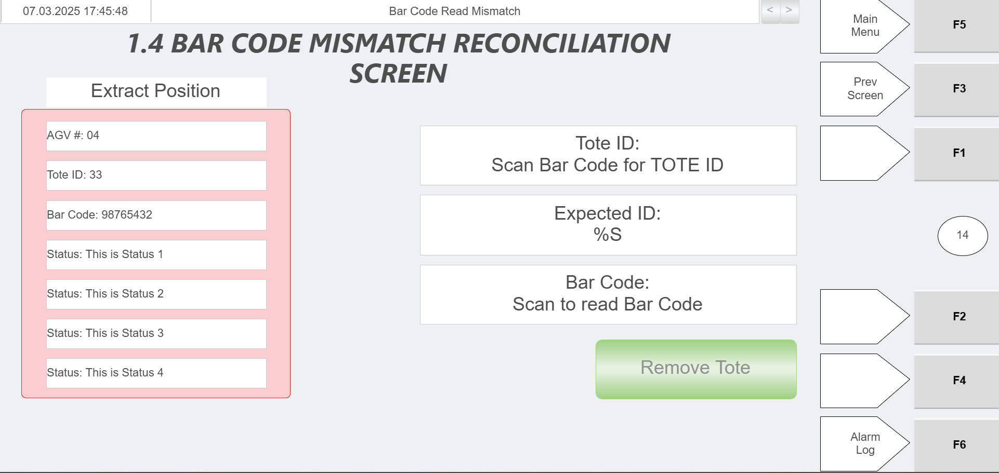
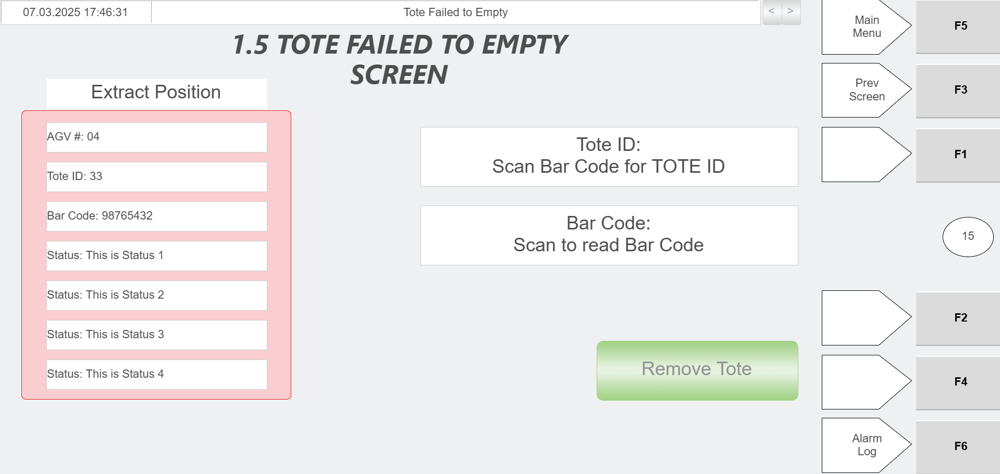

Scan Hospital Station Tote With Green Scanner to Determine Reason for Arrival
Procedure Type
operation
Primary Role
operator
Support Safe
Yes
Capability Tags
hospital_diversion
Access Surface
hospital_hmi, physical_floor
Audience Roles
operator
Failure Pattern Tags
None
Validation Status
needs_sme_review
Merge Status
source_finalized
Summary
When an AGV delivers a tote to the hospital station, the operator uses the green scanner to determine why the tote was brought to the station for manual handling.
When To Use
Use when an AGV brings a tote to a hospital station for manual handling (mis-sort, bad tip, or tote overload scenarios).
Visual References
Diagram of the Hospital Station layout showing the induct (left side) and extract (right side) sides and location context for the green scanner.Photo of the Hospital Station stacklight and its status meanings (e.g., Solid Green = No AGV present; Flashing Yellow for AGV present pre-tipping; RMS error indicated by Red/Yellow/Green).Induct/Extract Position information and Status messages that tell the operator why the tote is at the station and what action/menu to use.

Tote ID field populated using the green scanner, Expected ID, Bar Code scan area, and Extract Position Information panel (AGV#, Tote ID, Bar Code, Status).Tote ID field populated using the green scanner, Expected ID, Bar Code scan area, and Extract Position Information panel (AGV#, Tote ID, Bar Code, Status).

Tote ID field and Bar Code Read button for scanning with the green scanner, plus Status messages and Extract Position Information panel (AGV#, Tote ID, Bar Code, Status).
Procedure Steps
Step 1 — Wait for the AGV to bring the tote to the correct side of the hospital station
Responsible role: operator
Instruction:
At the hospital station, wait for the AGV to bring the tote to the right side (from the operator’s perspective).
Expected result:
The tote is delivered to the right side of the hospital station (extract side) where the operator can attend it.
Step 2 — Confirm tote presence using the hospital station stacklight indication
Responsible role: operator
Instruction:
Visually check the hospital station stacklight to confirm a tote is present at the station.
Expected result:
The stacklight indicates a tote is present at the hospital station.
Stop or Escalate If:
If the stacklight does not indicate tote presence, do not proceed with scanning; re-check station/tote positioning.
Step 3 — Scan the tote with the green scanner to determine the reason for arrival
Responsible role: operator
Instruction:
Scan the tote barcode using the green scanner.
Expected result:
A scan-based reason for the tote’s arrival is produced/available for use in manual handling.
Stop or Escalate If:
Escalate if the green scanner cannot read/produce a reason for the tote arrival (no scan result available).
Escalate if the tote reason cannot be determined even after re-scanning.
Step 4 — Verify the scan result is available on the hospital station HMI (or scanner output) and proceed with manual handling
Responsible role: operator
Instruction:
Check the hospital station HMI (if present) or the scanner output to confirm the scan result is available, then use that reason to proceed with manual handling.
Expected result:
The operator can see the scan-based reason (or the scan-populated tote ID/barcode fields that drive the station’s status) on the hospital station HMI or scanner output and uses it to proceed.
Screens / Images:
Induct/Extract Position information and Status messages that tell the operator why the tote is at the station and what action/menu to use.Tote ID field populated using the green scanner, Expected ID, Bar Code scan area, and Extract Position Information panel (AGV#, Tote ID, Bar Code, Status).Tote ID field populated using the green scanner, Expected ID, Bar Code scan area, and Extract Position Information panel (AGV#, Tote ID, Bar Code, Status).Tote ID field and Bar Code Read button for scanning with the green scanner, plus Status messages and Extract Position Information panel (AGV#, Tote ID, Bar Code, Status).
Stop or Escalate If:
Escalate if the tote reason cannot be determined even after re-scanning.